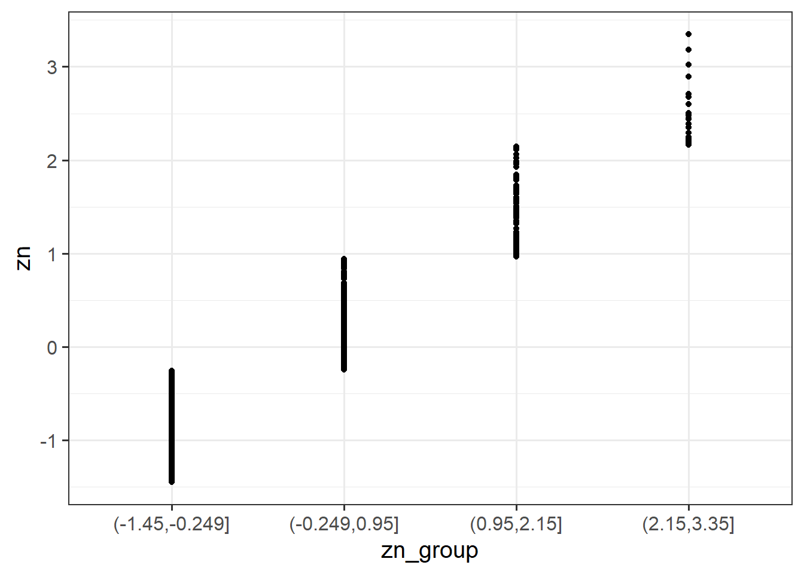

| variable | description |
|---|---|
| zo | Openness (Z-scored), measured on the Big-5 Aspects Scale (BFAS) |
| zc | Conscientiousness (Z-scored), measured on the Big-5 Aspects Scale (BFAS) |
| ze | Extraversion (Z-scored), measured on the Big-5 Aspects Scale (BFAS) |
| za | Agreeableness (Z-scored), measured on the Big-5 Aspects Scale (BFAS) |
| zn | Neuroticism (Z-scored), measured on the Big-5 Aspects Scale (BFAS) |
| scs | Social Comparison Scale (SCS): An 11-item scale that measures an individual’s perception of their social rank, attractiveness and belonging relative to others. The scale is scored as a sum of the 11 items (each measured on a 5-point scale), with higher scores indicating more favourable perceptions of social rank |
| dass | Depression Anxiety and Stress Scale (DASS-21): The DASS-21 includes 21 items, each measured on a 4-point scale. The score is derived from the sum of all 21 items, with higher scores indicating higher a severity of symptoms |
Interactions II: Num x Num
Learning Objectives
At the end of this lab, you will:
- Understand the concept of an interaction
- Be able to interpret the meaning of a numeric \(\times\) numeric interaction
- Understand the principle of marginality and why this impacts modelling choices with interactions
- Be able to visualize and probe interactions
What You Need
- Be up to date with lectures
- Have completed previous lab exercises from Week 1
Required R Packages
Remember to load all packages within a code chunk at the start of your RMarkdown file using library(). If you do not have a package and need to install, do so within the console using install.packages(" "). For further guidance on installing/updating packages, see Section C here.
For this lab, you will need to load the following package(s):
- tidyverse
- psych
- sjPlot
- kableExtra
- sandwich
- interactions
Presenting Results
All results should be presented following APA guidelines.If you need a reminder on how to hide code, format tables/plots, etc., make sure to review the rmd bootcamp.
The example write-up sections included as part of the solutions are not perfect - they instead should give you a good example of what information you should include and how to structure this. Note that you must not copy any of the write-ups included below for future reports - if you do, you will be committing plagiarism, and this type of academic misconduct is taken very seriously by the University. You can find out more here.
Lab Data
You can download the data required for this lab here or read it in via this link https://uoepsy.github.io/data/scs_study.csv
Study Overview
Research Question
Does the effect of social comparison on symptoms of depression, anxiety and stress vary depending on level of Neuroticism?
Setup
Setup
- Create a new RMarkdown file
- Load the required package(s)
- Read the scs_study dataset into R, assigning it to an object named
scs_study
Exercises
Study & Analysis Plan Overview
Question 1
Provide a brief overview of the study design and data, before detailing your analysis plan to address the research question.
Hint
- Give the reader some background on the context of the study
- State what type of analysis you will conduct in order to address the research question
- Specify the model to be fitted to address the research question
- Specify your chosen significance (\(\alpha\)) level
- State your hypotheses
Much of the information required can be found in the Study Overview codebook.
The statistical models flashcards may also be useful to refer to. Specifically the interaction models flashcards and numeric x numeric example flashcards might be of most use.
Descriptive Statistics & Visualisations
Question 2
Provide a table of descriptive statistics and visualise your data. You may also want to consider estimating the associations among the variables of interest.
Remember to interpret these in the context of the study.
Hint
Review the many ways to numerically and visually explore your data by reading over the data exploration flashcards.
For examples, see flashcards on descriptives statistics tables - numeric values only examples and numeric x numeric example - visualise data.
The pairs.panels() function may come in handy here to complete multiple tasks at once!

Question 3
For demonstration purposes only
To help us visualise and understand the associations among our variables a little better, copy and run the two code chunks below. It takes the dataset, and uses the cut() function to add a new variable called “zn_group”, which is the “zn” variable split into 4 groups.
We can see how it has split the “zn” variable by plotting the two against one another (note that the levels of the new variable are named according to the cut-points):
ggplot(data = scs_study, aes(x = zn_group, y = zn)) +
geom_point()
Plot the association between scores on the SCS and scores on the DASS-21, for each group of the variable we just created.
How does the pattern differ across groups? Does it suggest an interaction?
Hint
Rather than creating four separate plots, you might want to map some feature of the plot to the variable we created in the data, or make use of facet_wrap() / facet_grid().
Remember that you can specify geom_smooth() to add a trend line. For a recap, review the facet examples contained within the visual exploration flashcards. Alternatively, review the numeric x numeric example - visualise data flashcard.
Visualising Interaction Terms
Cutting one of the explanatory variables up into groups essentially turns a numeric variable into a categorical one. We did this just to make it easier to visualise how an association differs across the values of another variable, because we can imagine a separate line for the association between SCS and DASS-21 scores for each of the groups of Neuroticism. However, in grouping a numeric variable like this we lose information. Neuroticism is measured on a continuous scale, and we want to capture how the association between SCS and DASS-21 differs across that continuum (rather than cutting it into chunks).
We could imagine cutting it into more and more chunks (see Figure 1), until what we end up with is an infinite number of lines - i.e., a three-dimensional plane/surface (recall that in for a multiple regression model with 2 explanatory variables, we can think of the model as having three-dimensions). The inclusion of the interaction term simply results in this surface no longer being necessarily flat. You can see this in Figure 2.

Model Fitting & Interpretation
Question 4
Consider that Neuroticism has already been \(z\)-scored, but scs has not. To ensure that we can compare the effects of our estimates (and so they are both on meaningful scales), standardize the scs variable.
Hint
Review the standardisation flashcards for a recap if needed. Note, it would be best to create a new z-scored variable to then use within the model in this instance.
Question 5
Fit your model (including the standardized predictor variables) using lm(), and assign it the name “dass_mdl”.
Hint
We can fit interaction models using the lm() function.
For an overview, see the interaction models flashcards.
For an example, review the interaction models > numeric x numeric example > model building flashcards.
Question 6
Interpret your coefficients in the context of the study.
Hint
Recall that we can obtain our parameter estimates using various functions such as summary(),coef(), coefficients(), etc.
For an overview of how to interpret coefficients, review the interaction models > interpreting coefficients flashcard. It is important to remember that you have standardised the variables in your model, and this will affect your interpretation. For a recap on what standardisation is and how it affects the scales of your variables, review the standardisation flashcard.
For a specific example of coefficient interpretation, review the interaction models > numeric x numeric example > results interpretation flashcards.
Visualise Interaction Model
Question 7
Using the probe_interaction() function from the interactions package, visualise the interaction effects from your model.
Try to summarise the interaction effects in a short and concise sentence.
Hint
For an overview and example, review the interaction models > numeric x numeric example > model visualisation flashcards.

Question 8
Conduct a simple slopes and regions of significance analysis.
Hint
For an overview and example, review the interaction models > numeric x numeric example > model visualisation flashcards. Pay particular attention to how you can extract specific parts of output.
Writing Up & Presenting Results
Question 9
Provide key model results in a formatted table.
Hint
Use tab_model() from the sjPlot package. For a quick guide, review the tables flashcard.
Question 10
Interpret your results in the context of the research question and report your model in full.
Make reference to the interaction plot and regression table.
Hint
For an example of coefficient interpretation, review the interaction models > numeric x numeric example > results interpretation flashcards.
Compile Report
Compile Report
Knit your report to PDF, and check over your work. To do so, you should make sure:
- Only the output you want your reader to see is visible (e.g., do you want to hide your code?)
- Check that the tinytex package is installed
- Ensure that the ‘yaml’ (bit at the very top of your document) looks something like this:
---
title: "this is my report title"
author: "B1234506"
date: "07/09/2025"
output: bookdown::pdf_document2
---
What to do if you cannot knit to PDF
If you are having issues knitting directly to PDF, try the following:
- Knit to HTML file
- Open your HTML in a web-browser (e.g. Chrome, Firefox)
- Print to PDF (Ctrl+P, then choose to save to PDF)
- Open file to check formatting
Hiding Code and/or Output
To not show the code of an R code chunk, and only show the output, write:
```{r, echo=FALSE}
# code goes here
```To show the code of an R code chunk, but hide the output, write:
```{r, results='hide'}
# code goes here
```To hide both code and output of an R code chunk, write:
```{r, include=FALSE}
# code goes here
```
Tinytex
You must make sure you have tinytex installed in R so that you can “Knit” your Rmd document to a PDF file:
install.packages("tinytex")
tinytex::install_tinytex()